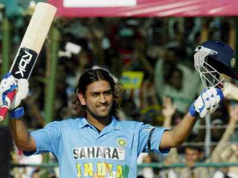

captain
cl
December 2004: Dhoni makes his international debut against Bangladesh in an ODI at Chittagong.
October 2005: Promoted up the order to accelerate scoring, Dhoni smashes an unbeaten 183 off 145 balls, the then record of the highest individual score in ODI cricket in the second innings.
Dhoni also wins Man of the Series award after India's 3-0 triumph in the five-match rubber.
December 2005: Dhoni makes his Test debut against Sri Lanka in Chennai.
September 2007: Dhoni takes over the reins of ODI captaincy from Rahul Dravid.
Dhoni equals Adam Gilchrist's international record for most dismissals (6) in an innings in ODIs.
Dhoni also becomes captain of the Indian squad for the inaugural ICC World Twenty20 in South Africa.
He leads a young Indian side to victory against Pakistan in the final.
He takes the risk of picking an inexperienced pacer Joginder Sharma instead of Harbhajan Singh to bowl the last over that eventually pays off.
August 2008: Dhoni leads India to its first-ever bilateral ODI series victory in Sri Lanka.
Dhoni wins the Rajiv Gandhi Khel Ratna award.
November 2008: Dhoni makes his debut as full-time Test captain of India during the fourth and final Test against Australia at Nagpur, replaces Anil Kumble who was injured in the third Test.
December 2008: Dhoni wins the ICC ODI Player of the Year honour.
March 2009: Dhoni leads India to its first bilateral ODI series victory in New Zealand.
April 2009: Dhoni honoured with the Padma Shri, India's fourth highest civilian honour.
December 2009: Under Dhoni's captaincy, India tops the ICC Test cricket rankings for the first time.
Dhoni retains his ICC ODI Player of the year award, becomes the first player to win it twice.
May 2010: Dhoni leads Chennai Super Kings to their maiden Indian Premier League title.
CSK beat Mumbai Indians by 22 runs in Mumbai.
April 2011: Dhoni plays his most memorable match-winning unbeaten knock -- 91 off 79 -- balls against Sri Lanka in the World Cup final to help India lift the trophy after 28 years.
He finishes the match with a huge six over long-on off Nuwan Kulasekara and wins the Man of the Match award.
May 2011: With Dhoni as captain, Chennai Super Kings retain the IPL, beat Royal Challengers Banglore by 58 runs in the final in Bengaluru.
November 2011: The Indian Territorial Army confers the honorary rank of Lieutenant Colonel on Dhoni.
March 2013: Dhoni becomes the most successful Indian Test captain, eclipses Sourav Ganguly's record of 21 victories from 49 Tests.
June 2013: India wins the ICC Champions Trophy under Dhoni's captaincy, beats England by five runs in the final.
Dhoni becomes the first captain to win all three ICC trophies.
February 2013: Dhoni powers his way to his first double hundred in Tests.
He scores 224 off 365 balls, most runs by an Indian wicketkeeper in an innings surpassing Budhi Kunderan's 192.
March 2013: Under Dhoni's captaincy, India beats Australia 4-0 at home for the first time in a Test series.
April 2018: Dhoni receives the Padma Bhushan, India's third-highest civillian honour.
May 2018: Under Dhoni's captaincy, Chennai Super Kings win their third IPL title by defeating Sunrisers Hyderabad by eight wickets.